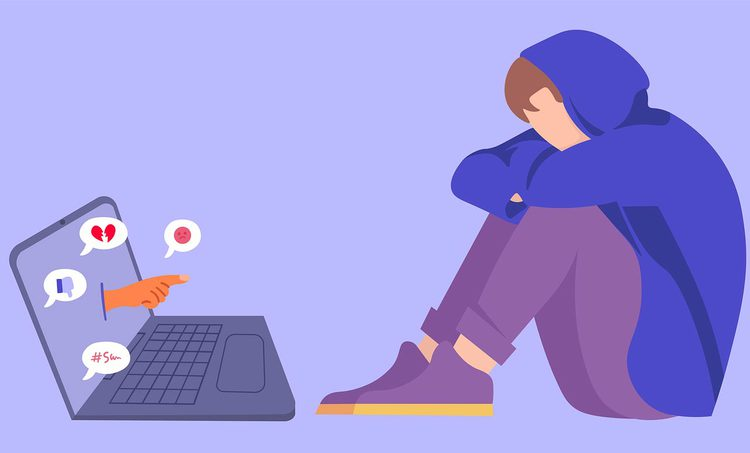
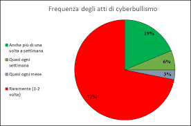

Il cyber bullismo è la manifestazione in Rete di un fenomeno più ampio e meglio conosciuto come bullismo. Quest'ultimo è caratterizzato da azioni violente e intimidatorie esercitate da un bullo, o un gruppo di bulli, su una vittima. Le azioni possono riguardare molestie verbali, aggressioni fisiche, persecuzioni, generalmente attuate in ambiente scolastico. Oggi la tecnologia consente ai bulli di infiltrarsi nelle case delle vittime, di materializzarsi in ogni momento della loro vita, perseguitandole con messaggi, immagini, video offensivi inviati tramite smartphone o pubblicati sui siti web tramite Internet. Il bullismo diventa quindi cyberbullismo. Il cyberbullismo definisce un insieme di azioni aggressive e intenzionali, di una singola persona o di un gruppo, realizzate mediante strumenti elettronici (sms, mms, foto, video, email, chatt rooms, istant messaging, siti web, telefonate), il cui obiettivo e quello di provocare danni ad un coetaneo incapace di difendersi. La vittima del cyberbullismo non è stupida, nemmeno è in qualche modo inferiore al bullo: la vittima del bullismo, anche di quello elettronico, è solamente quella sfortunata persona che mostra, per una qualunque circostanza (anche non volontaria), una o più delle sue debolezze esponendole dinanzi a chi se ne approfitterà. Rispetto al bullismo tradizionale che si verifica nella vita reale, il cyberbullismo si realizza su internet talvolta causando danni violenti. Difficile reperibilità: se il cyberbullismo avviene via SMS, messaggistica istantanea o mail, o in un forum online privato, ad esempio, è più difficile reperirlo e rimediarvi.
Categorie di cyberbullismo Flaming: messaggi online violenti e volgari (vedi "flame") mirati a suscitare battaglie verbali in un forum. Molestie: spedizione ripetuta di messaggi insultanti mirati a ferire il destinatario. Denigrazione: sparlare di qualcuno per danneggiare gratuitamente e con cattiveria la sua reputazione, via e-mail, messaggistica istantanea, gruppi su social network, etc. Sostituzione di persona: farsi passare per un'altra persona per spedire messaggi o pubblicare testi reprensibili (vedi "furto d'identità"). Inganno: ottenere la fiducia di qualcuno con l'inganno per poi pubblicare o condividere con altri le informazioni confidate via mezzi elettronici. Esclusione: escludere deliberatamente una persona da un gruppo online per provocare in essa un sentimento di emarginazione. Cyberpersecuzione ("cyberstalking"): molestie e denigrazioni ripetute e minacciose mirate a incutere paura. stalking Doxing: diffusione pubblica via internet di dati personali e sensibili.
Bullismo e cyberbullismo sono entrambi considerati reati: quest’ultimo si configura come una violazione del Codice civile e del Codice penale, oltre che della Legge sulla Privacy (196/2003). Il fenomeno del bullismo online si configura attraverso diverse modalità. Le forme di Cyberbullismo più diffuse sono: Ingiuria Molestie Minacce Invio di messaggi volgari o violenti, noto anche come flaming Diffusione di materiale pedo-pornografico Diffamazione online Furto di identità digitale sui social network
percentuale degli atti di cyperbullismo

Differenze tra bullismo e cyberbullismo.
BULLISMO